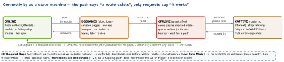

networking · folio
In one line: On a phone the network is a variable: it vanishes (tunnel), degrades (one bar, 20 % loss), lies (a captive portal answers every request with a login page), costs money (cellular, Low Data Mode) and changes under you (Wi-Fi → LTE). Give every request a timeout, a retry rule, an idempotency story and an offline behaviour — then prove it under a simulated bad network.
Download PDF Print view LaTeX source


Timeouts per layer
| layer | what bounds it |
|---|---|
| user action | your deadline: spinner 10 s → cached data + Retry |
| URLSession idle | timeoutIntervalForRequest (60 s): max gap between bytes |
| whole transfer | timeoutIntervalForResource (default 7 days) |
| waiting for a path | waitsForConnectivity: bound it yourself (cancel) |
| TCP connect | NWProtocolTCP.Options.connectionTimeout |
Retries and idempotency
- Retry transient errors only (
timedOut,networkConnectionLost,cannotConnectToHost, 502/503/504, 429 withRetry-After); never 4xx logic errors. Exponential backoff + full jitter + a cap. - URLSession already retries idempotent requests when a reused connection drops (QA1941) — don’t stack your own immediate retry on top.
- A timeout means unknown, not failed: POSTs carry an
Idempotency-Keycreated once per user action and reused on every attempt.
Detecting connectivity
NWPathMonitor:status(.satisfied/.unsatisfied/.requiresConnection),unsatisfiedReason,isExpensive,isConstrained(iOS 13),usesInterfaceType(.wifi). It sees routes, not the internet.- Don’t pre-flight: attempt, handle the error; retry on signals (path satisfied, foreground), not only timers.
- Low Data Mode:
allowsConstrainedNetworkAccess = falsemakes the task fail withURLError.networkUnavailableReason == .constrained— retry with a lighter request (also.expensive,.cellular). - Captive portals: the OS probes a known URL (Apple:
captive.apple.com) and shows the sign-in sheet; until then requests get redirects, HTML instead of JSON (decode errors on a “200”), or a certificate for the wrong host. Standard: RFC 8908/8910.
Example — path + session setup
let monitor = NWPathMonitor()
monitor.pathUpdateHandler = { path in
Task { @MainActor in
net.isOnline = path.status == .satisfied
net.lowData = path.isConstrained // Low Data Mode
net.metered = path.isExpensive // cellular, hotspot
if net.isOnline { await outbox.flush() } // jittered inside
}
}
monitor.start(queue: DispatchQueue(label: "net.path"))
let cfg = URLSessionConfiguration.default
cfg.waitsForConnectivity = true // wait, don't fail -1009
cfg.allowsConstrainedNetworkAccess = false // honour Low Data Mode
cfg.timeoutIntervalForRequest = 20 // idle gap, not total
// delegate: urlSession(_:taskIsWaitingForConnectivity:) -> "Waiting..."Coalescing, queuing, cancelling
- Single-flight: one in-flight
Taskper cache key (an actor holding[Key: Task<Value, Error>]); five cells asking for the same avatar make one request. - Cancel what the user left: tie requests to the view’s lifetime (
.taskmodifier, storedTaskcancelled indeinit) — bytes for a dismissed screen are waste. - Prioritise:
URLSessionTask.priority; visible cells before prefetch; separate sessions for bulk vs interactive (httpMaximumConnectionsPerHost). - Outbox for writes: persist the intent first (optimistic UI), send in order with idempotency keys, remove on 2xx, surface permanent 4xx to the user. Background upload: a
.backgroundsession (always waits for connectivity). - Batch small writes (analytics) — one radio wake, one request.
Testing bad networks
| Network Link Conditioner | Mac: Additional Tools for Xcode; iPhone: Settings → Developer. Profiles: 100% Loss, 3G, DSL, Edge, High Latency DNS, LTE, Very Bad Network, WiFi |
| Xcode Device Conditions | Devices window → Network Link / Thermal State (Xcode 11+, device on iOS 13+) |
| Android emulator | -netdelay gsm|edge|umts|lte|min:max,
-netspeed edge|lte|up:down (kbps); -netfast = none |
| Toxiproxy | TCP proxy for tests/CI: latency, bandwidth, timeout,
reset_peer, slicer, limit_data, down toxics |
Plus Charles / Proxyman (throttle, breakpoints, fake 500s) and the real world (lift, train, hotel Wi-Fi). Script: offline launch, drop mid-upload, 30 s latency, 5xx burst, captive, Low Data Mode — assert the UI state, not just “no crash”.
Traps
- “Check reachability, then request” — races, and a captive portal is “reachable”.
- Retry-on-timeout for a payment POST without an idempotency key → double charge.
timeoutIntervalForRequestis an idle timer: a slow trickle never trips it.- Testing only in the simulator on office Wi-Fi: no radio, no loss, no NAT64.